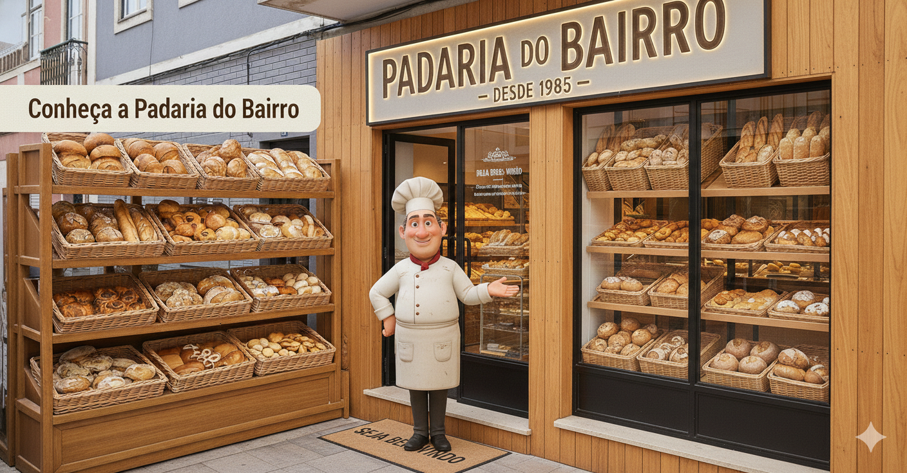
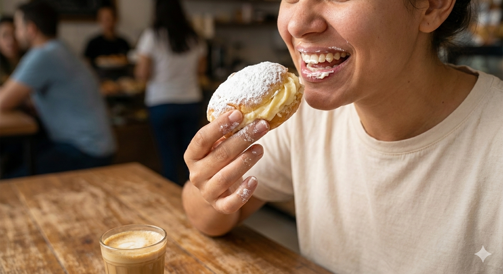
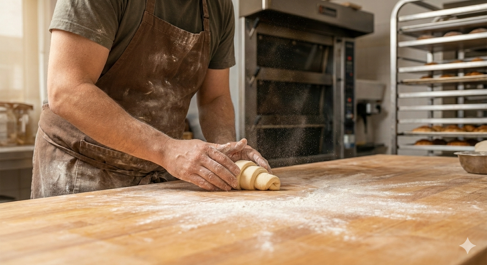
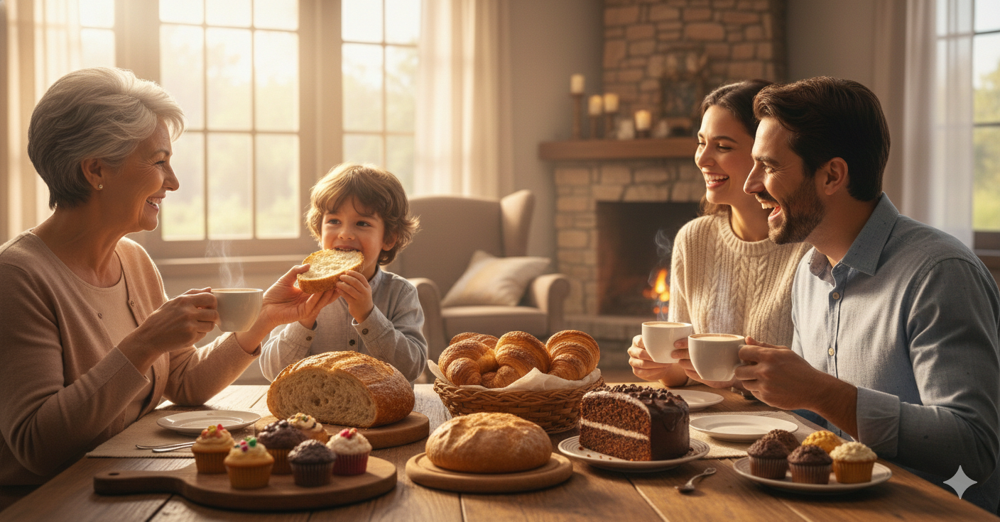
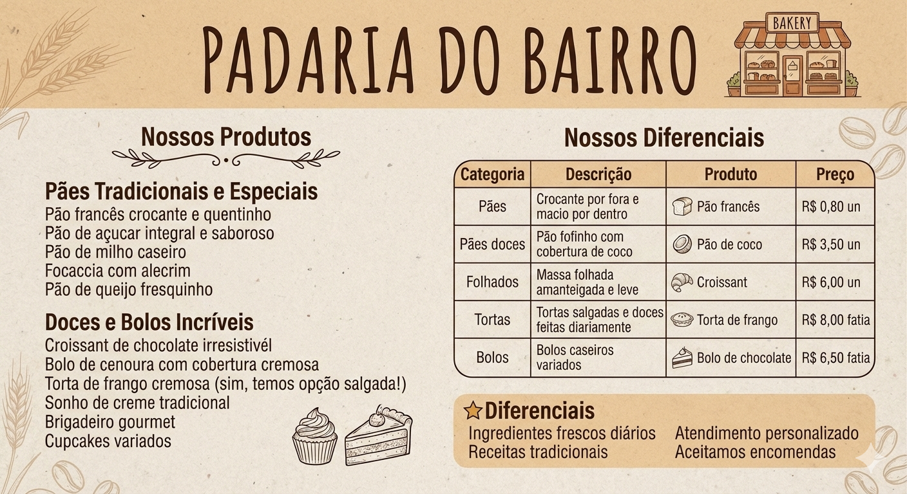

Sobre Nós
Fundada em 1985, a Padaria do Bairro nasceu do sonho do Sr. José de levar pães frescos e doces caseiros para a comunidade..
Trabalhamos com receitas tradicionais, mantendo o cuidado artesanal em cada etapa da produção.
Nossa Missão
Oferecer produtos de panificação e confeitaria de alta qualidade, feitos com ingredientes selecionados e muito amor.
Ambiente da Padaria
Conheça o ambiente aconchegante da Padaria do Bairro, preparado para receber nossos clientes com conforto e carinho.
   Nossos Produtos
Oferecemos uma variedade de pães, doces e salgados preparados diariamente com ingredientes selecionados.
Principais Produtos
- 🥖 Pão francês
- 🍰 Pão de açúcar
- 🥐 Croissant
- 🍫 Bolo de chocolate
- 🍗 Torta de frango
Diferenciais
Nosso compromisso é oferecer qualidade, atendimento humanizado e produtos sempre frescos.
- 🥬 Ingredientes frescos diários
- 📜 Receitas tradicionais
- 🤝 Atendimento personalizado
Vídeo institucional da nossa tradição
Localização
Como chegar
📍Estamos localizados Rua Mamede Moisés Raia, 422 - Monte Castelo, Campina Grande - PB. Venha nos visitar!
Horário de Funcionamento
- 🕕 Segunda a Sexta: 6h às 19h
- 🕕 Sábado: 6h às 18h
- 🕖 Domingo: 7h às 12h